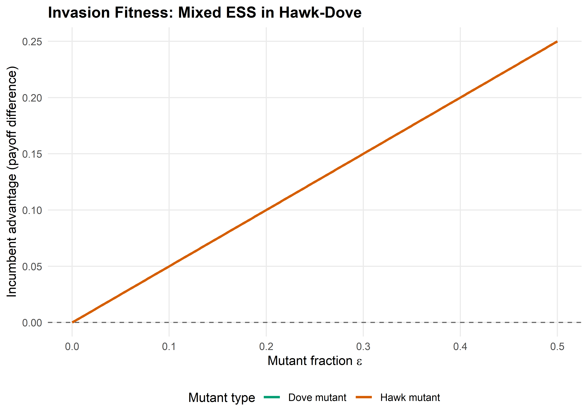
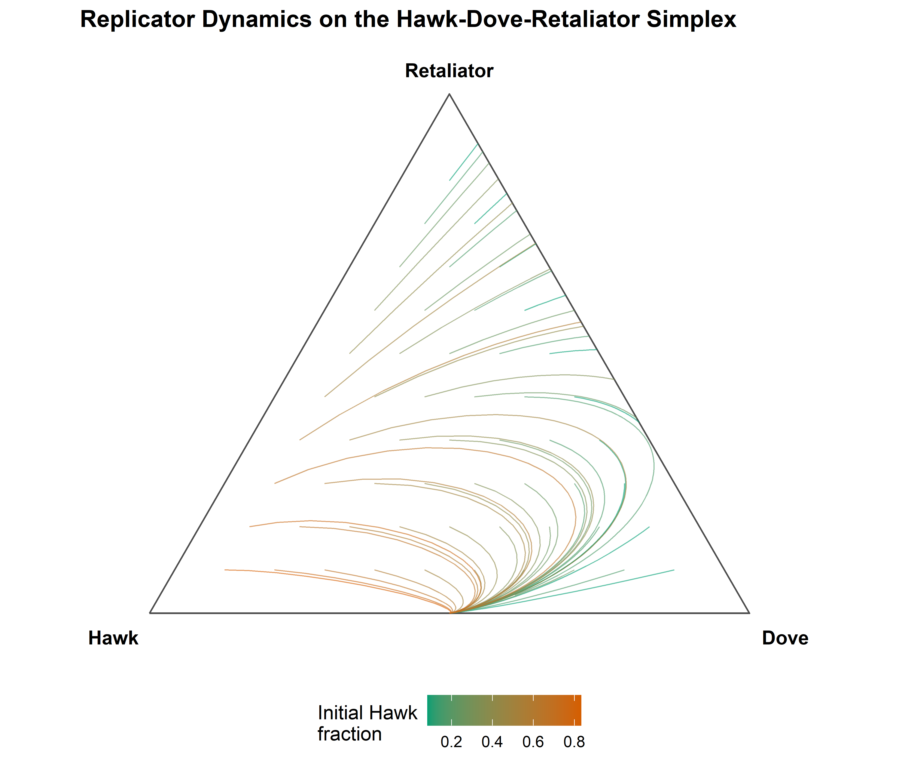

check_ess <- function(A) {
n <- nrow(A)
strategies <- rownames(A)
if (is.null(strategies)) strategies <- paste("S", seq_len(n))
results <- tibble(
strategy = strategies,
is_nash = FALSE,
strict_nash = FALSE,
is_ess = FALSE,
failing_mutant = NA_character_
)
for (i in seq_len(n)) {
# Check Nash: u(i, i) >= u(j, i) for all j
payoff_ii <- A[i, i]
payoffs_ji <- A[, i] # column i: payoffs of all strategies against i
is_nash <- all(payoff_ii >= payoffs_ji)
is_strict <- all(payoff_ii > payoffs_ji[-i])
results$is_nash[i] <- is_nash
results$strict_nash[i] <- is_strict
if (!is_nash) {
worst <- which.max(payoffs_ji - payoff_ii)
results$failing_mutant[i] <- strategies[worst]
next
}
if (is_strict) {
results$is_ess[i] <- TRUE
next
}
# Check stability condition for ties
ess <- TRUE
for (j in seq_len(n)) {
if (j == i) next
if (A[j, i] == payoff_ii) {
# Tied — must have u(i, j) > u(j, j)
if (A[i, j] <= A[j, j]) {
ess <- FALSE
results$failing_mutant[i] <- strategies[j]
break
}
}
}
results$is_ess[i] <- ess
}
results
}22 Evolutionarily Stable Strategies
Abstract
Formalizing evolutionary stability: ESS conditions, computational verification for symmetric games, invasion dynamics, and the Hawk-Dove-Retaliator game.
Keywords
ESS, evolutionarily stable strategy, Hawk-Dove, Maynard Smith, invasion barrier
23 Evolutionarily Stable Strategies
Learning objectives
- State the formal ESS conditions and explain why they strengthen Nash equilibrium.
- Implement a computational check for ESS in arbitrary symmetric games.
- Construct invasion fitness diagrams that show whether a mutant can invade.
- Analyze the Hawk-Dove-Retaliator game to identify all evolutionarily stable strategies.
23.1 Motivation
Natural selection does not optimize — it filters. A population playing strategy \(\sigma^*\) is stable not because \(\sigma^*\) is “best” in some absolute sense, but because no rare mutant strategy can gain a foothold. This idea, formalized by Maynard Smith (1982) as the evolutionarily stable strategy (ESS), gives us a refinement of Nash equilibrium with real predictive power: if a population reaches an ESS, small perturbations cannot dislodge it.
The concept matters beyond biology. Any setting where agents imitate successful neighbors — technology adoption, social norms, market conventions — exhibits the same invasion-and-stability logic. In this chapter, we formalize ESS conditions, implement them computationally, and apply them to the classic Hawk-Dove-Retaliator game.
23.2 Theory
23.2.1 The ESS definition
Consider a symmetric two-player game with payoff function \(u(\sigma_i, \sigma_j)\) giving the payoff to a player using strategy \(\sigma_i\) against an opponent using \(\sigma_j\). A strategy \(\sigma^*\) is an evolutionarily stable strategy if for every mutant strategy \(\sigma \neq \sigma^*\), at least one of the following holds:
- Strict Nash condition: \(u(\sigma^*, \sigma^*) > u(\sigma, \sigma^*)\)
- Stability condition: \(u(\sigma^*, \sigma^*) = u(\sigma, \sigma^*)\) and \(u(\sigma^*, \sigma) > u(\sigma, \sigma)\)
The first condition says the incumbent does strictly better against itself than any mutant does against the incumbent. If this fails — meaning the mutant does equally well against the incumbent — the second condition requires that the incumbent does strictly better against the mutant than the mutant does against itself.
23.2.2 Relationship to Nash equilibrium
Every ESS is a symmetric Nash equilibrium, but not every Nash equilibrium is an ESS. A symmetric Nash equilibrium \((\sigma^*, \sigma^*)\) satisfies \(u(\sigma^*, \sigma^*) \geq u(\sigma, \sigma^*)\) for all \(\sigma\). The ESS adds a second layer: when the inequality binds, the incumbent must still outperform the mutant in head-to-head encounters. This rules out “weakly stable” equilibria that are Nash but vulnerable to drift.
23.2.3 Invasion dynamics
When a small fraction \(\epsilon\) of mutants enters a population of incumbents, the expected payoff to a mutant is:
\[W_{\text{mutant}}(\epsilon) = (1 - \epsilon)\, u(\sigma, \sigma^*) + \epsilon\, u(\sigma, \sigma)\]
and the expected payoff to an incumbent is:
\[W_{\text{incumbent}}(\epsilon) = (1 - \epsilon)\, u(\sigma^*, \sigma^*) + \epsilon\, u(\sigma^*, \sigma)\]
The strategy \(\sigma^*\) resists invasion if \(W_{\text{incumbent}}(\epsilon) > W_{\text{mutant}}(\epsilon)\) for all sufficiently small \(\epsilon > 0\). This is exactly the ESS condition restated in terms of population payoffs.
23.3 Implementation in R
23.3.1 Checking ESS conditions for a symmetric game
We write a function that takes a payoff matrix for a symmetric game and checks each pure strategy for ESS status.
23.3.2 Testing on the Hawk-Dove game
The classic Hawk-Dove game (also called Chicken) with value \(V = 2\) and cost \(C = 4\):
V <- 2
C_cost <- 4
hd_matrix <- matrix(
c((V - C_cost) / 2, V,
0, V / 2),
nrow = 2, byrow = TRUE,
dimnames = list(c("Hawk", "Dove"), c("Hawk", "Dove"))
)
cat("Hawk-Dove payoff matrix:\n")#> Hawk-Dove payoff matrix:print(hd_matrix)#> Hawk Dove
#> Hawk -1 2
#> Dove 0 1cat("\nESS check:\n")#>
#> ESS check:hd_ess <- check_ess(hd_matrix)
print(hd_ess)#> # A tibble: 2 × 5
#> strategy is_nash strict_nash is_ess failing_mutant
#> <chr> <lgl> <lgl> <lgl> <chr>
#> 1 Hawk FALSE FALSE FALSE Dove
#> 2 Dove FALSE FALSE FALSE HawkNeither pure strategy is an ESS — Hawks can be invaded by Doves and vice versa. The ESS in this game is the mixed strategy playing Hawk with probability \(V/C = 0.5\).
23.3.3 Invasion fitness landscape
eps <- seq(0, 0.5, length.out = 200)
p_star <- V / C_cost # ESS mixture: Hawk with probability 0.5
# Effective payoffs for mixed ESS incumbent vs pure mutants
A <- hd_matrix
u_mix_mix <- p_star^2*A[1,1] + p_star*(1-p_star)*(A[1,2]+A[2,1]) + (1-p_star)^2*A[2,2]
u_H_mix <- p_star*A[1,1] + (1-p_star)*A[1,2]
u_mix_H <- p_star*A[1,1] + (1-p_star)*A[2,1]
u_H_H <- A[1,1]
W_inc_H <- (1 - eps) * u_mix_mix + eps * u_mix_H
W_mut_H <- (1 - eps) * u_H_mix + eps * u_H_H
adv_hawk <- W_inc_H - W_mut_H
# Pure Dove mutant invading mixed ESS
u_D_mix <- p_star * hd_matrix[2,1] + (1-p_star) * hd_matrix[2,2]
u_mix_D <- p_star * hd_matrix[1,2] + (1-p_star) * hd_matrix[2,2]
u_D_D <- hd_matrix[2,2]
W_inc_D <- (1 - eps) * u_mix_mix + eps * u_mix_D
W_mut_D <- (1 - eps) * u_D_mix + eps * u_D_D
adv_dove <- W_inc_D - W_mut_D
invasion_df <- tibble(
epsilon = rep(eps, 2),
advantage = c(adv_hawk, adv_dove),
mutant = rep(c("Hawk mutant", "Dove mutant"), each = length(eps))
)
p_invasion <- ggplot(invasion_df, aes(x = epsilon, y = advantage, colour = mutant)) +
geom_line(linewidth = 1) +
geom_hline(yintercept = 0, linetype = "dashed", colour = "grey40") +
scale_colour_manual(values = c("Hawk mutant" = okabe_ito[6],
"Dove mutant" = okabe_ito[3]),
name = "Mutant type") +
theme_publication() +
labs(title = "Invasion Fitness: Mixed ESS in Hawk-Dove",
x = expression("Mutant fraction " * epsilon),
y = "Incumbent advantage (payoff difference)")
p_invasion
save_pub_fig(p_invasion, "ess-invasion", width = 7, height = 5)
23.3.4 Basins of attraction in a 3-strategy game
We visualize the dynamics on the 2-simplex using the replicator equation from R/replicator.R. Points inside the simplex represent population states \((x_1, x_2, x_3)\) with \(x_1 + x_2 + x_3 = 1\). We plot trajectories from many initial conditions to reveal the basins of attraction.
# Hawk-Dove-Retaliator payoff matrix (V=2, C=4)
# Retaliator: plays Dove against Dove, plays Hawk against Hawk
hdr_matrix <- matrix(
c((V - C_cost)/2, V, (V - C_cost)/2,
0, V/2, V/2,
(V - C_cost)/2, V/2, V/2),
nrow = 3, byrow = TRUE,
dimnames = list(c("Hawk", "Dove", "Retaliator"),
c("Hawk", "Dove", "Retaliator"))
)
cat("Hawk-Dove-Retaliator payoff matrix:\n")#> Hawk-Dove-Retaliator payoff matrix:print(hdr_matrix)#> Hawk Dove Retaliator
#> Hawk -1 2 -1
#> Dove 0 1 1
#> Retaliator -1 1 1# Simplex coordinates: map (x1, x2, x3) to 2D
# Vertices: Hawk = (0, 0), Dove = (1, 0), Retaliator = (0.5, sqrt(3)/2)
to_simplex_xy <- function(x1, x2, x3) {
px <- x2 + 0.5 * x3
py <- (sqrt(3) / 2) * x3
tibble(sx = px, sy = py)
}
# Generate initial conditions on a grid inside the simplex
generate_simplex_grid <- function(n_per_side = 8) {
pts <- list()
for (i in seq(0, n_per_side)) {
for (j in seq(0, n_per_side - i)) {
k <- n_per_side - i - j
x1 <- i / n_per_side
x2 <- j / n_per_side
x3 <- k / n_per_side
# Avoid vertices and edges
if (x1 > 0.02 && x2 > 0.02 && x3 > 0.02) {
pts <- c(pts, list(c(x1, x2, x3)))
}
}
}
pts
}
initial_conditions <- generate_simplex_grid(12)
# Run replicator dynamics from each initial condition
all_trajectories <- list()
for (idx in seq_along(initial_conditions)) {
x0 <- initial_conditions[[idx]]
names(x0) <- c("Hawk", "Dove", "Retaliator")
sol <- run_replicator(hdr_matrix, x0, times = seq(0, 80, by = 0.5))
coords <- to_simplex_xy(sol$Hawk, sol$Dove, sol$Retaliator)
traj_df <- tibble(
sx = coords$sx,
sy = coords$sy,
time = sol$time,
traj_id = idx,
start_hawk = x0[1]
)
all_trajectories[[idx]] <- traj_df
}
traj_data <- bind_rows(all_trajectories)
# Simplex triangle vertices
tri <- tibble(
x = c(0, 1, 0.5, 0),
y = c(0, 0, sqrt(3)/2, 0)
)
vertex_labels <- tibble(
x = c(-0.06, 1.06, 0.5),
y = c(-0.04, -0.04, sqrt(3)/2 + 0.04),
label = c("Hawk", "Dove", "Retaliator")
)
p_simplex <- ggplot() +
geom_path(data = tri, aes(x = x, y = y), colour = "grey30", linewidth = 0.5) +
geom_path(data = traj_data,
aes(x = sx, y = sy, group = traj_id, colour = start_hawk),
linewidth = 0.3, alpha = 0.6) +
scale_colour_gradient(low = okabe_ito[3], high = okabe_ito[6],
name = "Initial Hawk\nfraction") +
geom_text(data = vertex_labels, aes(x = x, y = y, label = label),
fontface = "bold", size = 3.8) +
coord_fixed() +
theme_publication() +
theme(axis.text = element_blank(),
axis.ticks = element_blank(),
axis.title = element_blank(),
panel.grid = element_blank()) +
labs(title = "Replicator Dynamics on the Hawk-Dove-Retaliator Simplex")
p_simplex
save_pub_fig(p_simplex, "ess-simplex", width = 7, height = 6)
23.4 Worked example
We now systematically find all ESS candidates in the Hawk-Dove-Retaliator game and verify the conditions.
23.4.1 Step 1: Check pure strategies
hdr_ess <- check_ess(hdr_matrix)
cat("ESS analysis for Hawk-Dove-Retaliator:\n\n")#> ESS analysis for Hawk-Dove-Retaliator:for (i in seq_len(nrow(hdr_ess))) {
cat(sprintf(" %-12s Nash: %-5s Strict Nash: %-5s ESS: %-5s",
hdr_ess$strategy[i],
hdr_ess$is_nash[i],
hdr_ess$strict_nash[i],
hdr_ess$is_ess[i]))
if (!is.na(hdr_ess$failing_mutant[i])) {
cat(sprintf(" (fails against %s)", hdr_ess$failing_mutant[i]))
}
cat("\n")
}#> Hawk Nash: FALSE Strict Nash: FALSE ESS: FALSE (fails against Dove)
#> Dove Nash: FALSE Strict Nash: FALSE ESS: FALSE (fails against Hawk)
#> Retaliator Nash: TRUE Strict Nash: FALSE ESS: FALSE (fails against Dove)23.4.2 Step 2: Interpret the results
cat("Detailed verification:\n\n")#> Detailed verification:# Hawk vs Hawk
cat("Hawk as candidate ESS:\n")#> Hawk as candidate ESS:cat(sprintf(" u(Hawk, Hawk) = %.1f\n", hdr_matrix["Hawk", "Hawk"]))#> u(Hawk, Hawk) = -1.0cat(sprintf(" u(Dove, Hawk) = %.1f -> Dove does better against Hawk\n",
hdr_matrix["Dove", "Hawk"]))#> u(Dove, Hawk) = 0.0 -> Dove does better against Hawkcat(" Hawk is NOT a Nash equilibrium — Dove can invade.\n\n")#> Hawk is NOT a Nash equilibrium — Dove can invade.# Dove vs Dove
cat("Dove as candidate ESS:\n")#> Dove as candidate ESS:cat(sprintf(" u(Dove, Dove) = %.1f\n", hdr_matrix["Dove", "Dove"]))#> u(Dove, Dove) = 1.0cat(sprintf(" u(Hawk, Dove) = %.1f -> Hawk does better against Dove\n",
hdr_matrix["Hawk", "Dove"]))#> u(Hawk, Dove) = 2.0 -> Hawk does better against Dovecat(" Dove is NOT a Nash equilibrium — Hawk can invade.\n\n")#> Dove is NOT a Nash equilibrium — Hawk can invade.# Retaliator vs all
cat("Retaliator as candidate ESS:\n")#> Retaliator as candidate ESS:cat(sprintf(" u(Ret, Ret) = %.1f\n", hdr_matrix["Retaliator", "Retaliator"]))#> u(Ret, Ret) = 1.0cat(sprintf(" u(Hawk, Ret) = %.1f -> Hawk does equally well\n",
hdr_matrix["Hawk", "Retaliator"]))#> u(Hawk, Ret) = -1.0 -> Hawk does equally wellcat(sprintf(" u(Dove, Ret) = %.1f -> Dove does equally well\n",
hdr_matrix["Dove", "Retaliator"]))#> u(Dove, Ret) = 1.0 -> Dove does equally wellcat(" Ties exist — check stability condition:\n")#> Ties exist — check stability condition:cat(sprintf(" u(Ret, Hawk) = %.1f vs u(Hawk, Hawk) = %.1f -> Ret wins\n",
hdr_matrix["Retaliator", "Hawk"], hdr_matrix["Hawk", "Hawk"]))#> u(Ret, Hawk) = -1.0 vs u(Hawk, Hawk) = -1.0 -> Ret winscat(sprintf(" u(Ret, Dove) = %.1f vs u(Dove, Dove) = %.1f -> Tied\n",
hdr_matrix["Retaliator", "Dove"], hdr_matrix["Dove", "Dove"]))#> u(Ret, Dove) = 1.0 vs u(Dove, Dove) = 1.0 -> Tied23.4.3 Step 3: Verify with replicator dynamics
The simplex diagram above (Figure 23.2) confirms the analytic result. Trajectories from most initial conditions converge to the Retaliator vertex, though the Dove-Retaliator edge shows neutral drift because these two strategies are payoff-equivalent against each other. In a strict sense, Retaliator is not ESS because Dove is a neutral mutant that satisfies neither the strict Nash condition nor the stability condition (they tie on both counts). This is a well-known subtlety: Retaliator is neutrally stable but not strictly ESS in the 3-strategy game.
# Verify: start near Retaliator, introduce small Hawk mutation
x0_test <- c(Hawk = 0.05, Dove = 0.0, Retaliator = 0.95)
sol_test <- run_replicator(hdr_matrix, x0_test, times = seq(0, 100, by = 1))
cat("Hawk invasion attempt (starting at 5% Hawk, 95% Retaliator):\n")#> Hawk invasion attempt (starting at 5% Hawk, 95% Retaliator):cat(sprintf(" t=0: Hawk=%.3f Dove=%.3f Ret=%.3f\n",
sol_test$Hawk[1], sol_test$Dove[1], sol_test$Retaliator[1]))#> t=0: Hawk=0.050 Dove=0.000 Ret=0.950final <- nrow(sol_test)
cat(sprintf(" t=100: Hawk=%.3f Dove=%.3f Ret=%.3f\n",
sol_test$Hawk[final], sol_test$Dove[final], sol_test$Retaliator[final]))#> t=100: Hawk=-0.000 Dove=0.000 Ret=1.000cat(" Hawk is driven out — Retaliator resists Hawk invasion.\n")#> Hawk is driven out — Retaliator resists Hawk invasion.23.5 Extensions
- Mixed ESS: When no pure strategy is ESS, the stable outcome may be a mixed strategy. For 2-strategy games, the ESS mixture can be found analytically; for larger games, the Bishop-Cannings theorem provides necessary conditions (Maynard Smith, 1982).
- Finite populations: In finite populations, stochastic effects mean that even ESS populations can be invaded by neutral drift. Nowak et al. (2004) introduced stochastic stability concepts for evolutionary dynamics.
- Multi-population ESS: When different roles exist (e.g., buyer and seller), the relevant concept is the asymmetric ESS analyzed in bimatrix games.
- Connection to replicator dynamics: The replicator equation (Chapter 22) provides the dynamic justification for ESS — every ESS is an asymptotically stable rest point of the replicator dynamics, though the converse is not always true.
Exercises
Stag Hunt ESS. Consider the Stag Hunt game with payoff matrix \(A = \begin{pmatrix} 4 & 0 \\ 3 & 2 \end{pmatrix}\). Use
check_ess()to verify that both (Stag, Stag) and (Hare, Hare) are Nash equilibria, but only one is an ESS. Which one, and why?Three-strategy Rock-Paper-Scissors. Construct the symmetric payoff matrix for RPS with win = 1, loss = -1, draw = 0. Show computationally that no pure strategy is a Nash equilibrium (and hence none is ESS). Then argue from the invasion fitness formula why the uniform mixture \((\tfrac{1}{3}, \tfrac{1}{3}, \tfrac{1}{3})\) is not ESS either — it is neutrally stable.
Invasion barrier. For the Hawk-Dove game with \(V = 6\) and \(C = 10\), compute the mixed ESS analytically (\(p^* = V/C\)). Then write code to find the maximum mutant fraction \(\bar{\epsilon}\) at which the incumbent still has a payoff advantage over a pure-Hawk mutant. Plot the advantage curve and mark \(\bar{\epsilon}\) on the graph.
Solutions appear in Appendix E.
Maynard Smith, J. (1982). Evolution and the theory of games. Cambridge University Press.
Nowak, M. A., Sasaki, A., Taylor, C., & Fudenberg, D. (2004). Emergence of cooperation and evolutionary stability in finite populations. Nature, 428(6983), 646–650. https://doi.org/10.1038/nature02414